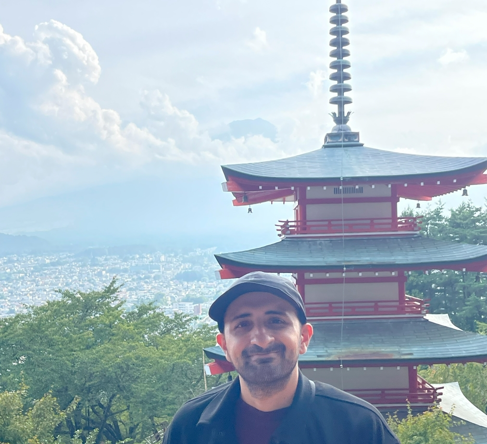

I am a Research Associate at the University of Strathclyde's Department of Electronic & Electrical Engineering. My work sits at the intersection of computer vision, edge AI, and heterogeneous hardware — building systems that see, think, and act efficiently.
PhD in Computing Science from the University of Stirling · MEng Software Engineering from Heriot-Watt University.

Selected Works